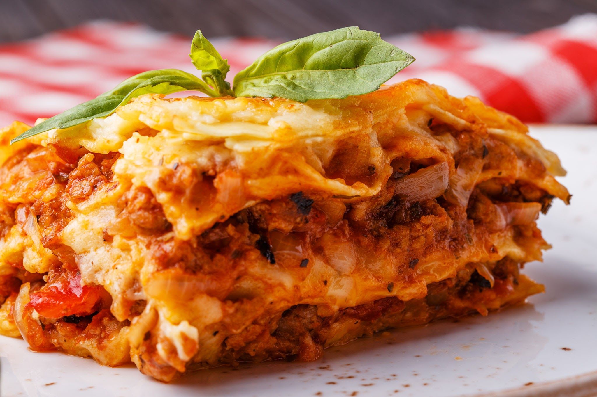

the Best Lsagna the world has ever seen!

description:
Lasagna is a classic Italian dish that is enjoyed by millions of people around the world. It is a perfect blend of tender pasta sheets layered with a rich, savory meat sauce, a creamy cheese filling, and a fragrant tomato sauce. This delicious combination of flavors and textures makes lasagna an irresistible dish that will tantalize your taste buds.
If you're looking for a hearty and satisfying meal, look no further than lasagna. Whether you're feeding a crowd or just feeding yourself, lasagna is a dish that will leave you feeling full and satisfied. It's the perfect comfort food, especially on chilly nights. Plus, with so many variations and toppings to choose from, there is a lasagna recipe out there for everyone! So why not treat yourself to a comforting and delicious serving of lasagna tonight? Your taste buds will thank you!
igredients:
- 1 pound ground beef
- 1 onion, chopped
- 2 cloves garlic, minced
- 1 can (28 ounces) crushed tomatoes
- 2 tablespoons tomato paste
- 1 teaspoon dried basil
- 1 teaspoon dried oregano
- Salt and pepper, to taste
- 9 lasagna noodles
- 15 ounces ricotta cheese
- 1 egg
- 1/2 cup grated Parmesan cheese
- 4 cups shredded mozzarella cheese
Steps:
- Preheat oven to 375°F. In a large saucepan, cook beef, onion, and garlic over medium heat until beef is no longer pink; drain. Stir in the tomatoes, tomato paste, basil, oregano, salt, and pepper. Bring to a boil. Reduce heat; simmer, uncovered, for 15 minutes.
- Cook lasagna noodles according to package instructions; drain. In a large bowl, combine the ricotta cheese, egg, and Parmesan cheese. Spread a fourth of the meat sauce into a greased 13x9-in. baking dish. Layer with three noodles, a third of the ricotta mixture and 1 cup mozzarella cheese.
- Repeat layers twice. Top with remaining meat sauce and mozzarella cheese. Cover and bake for 25 minutes. Uncover; bake until cheese is melted, 10-15 minutes longer.
- Let stand for 10 minutes before serving. Enjoy!